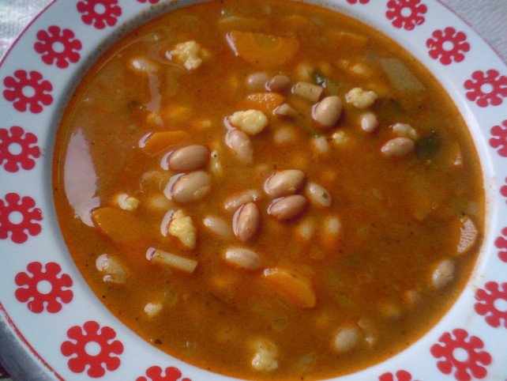

Bableves
- A fejtett bableves elkészítéséhez a babot feltesszük főni a feldarabolt zöldségekkel együtt. A
petrezselyem- és zellerzöldeket összekötjük, és azt is beletesszük a levesbe. Ízlés szerint sózzuk.
- Amikor már minden zöldség puha, és a bab is megfőtt, a zsírból, a felkockázott hagymából és a
lisztből hagymás rántást készítünk. Amikor már világosbarna, a tűzről lehúzva hozzáadjuk a
pirospaprikát, hideg vízzel felengedjük és a levesre öntjük. Összeforraljuk, borsozzuk és ha
szükséges, sóval ízesítjük.
- A tojást annyi liszttel és egy kis sóvel összekeverjük, hogy kemény, csipegethető tésztát kapjunk.
Lisztezett tálcára csipegetjük.
- A csipetkét beletehetjük a levesbe is (5 perc alatt megfő), de kifőzhetjük külön is, és amikor puha,
belekeverjük a levesbe, majd hagyjuk állni még 10 percig.
- A bablevest forrón tányérokba szedjük, friss kenyeret kínálhatunk hozzá.

Hozzávalók:
- 50dkg fejtett bab
- 1 szál sárgarépa
- 1 szál petrezselyemgyökér
- 1 db zeller
- petrezselyemzöld
- zellerzöld
- 1 ek zsír
- 1 fej hagyma
- 2 ek liszt
- 2 tk pirospaprika
- 1 db tojás
- 2 ek víz
- liszt
- só
- bors